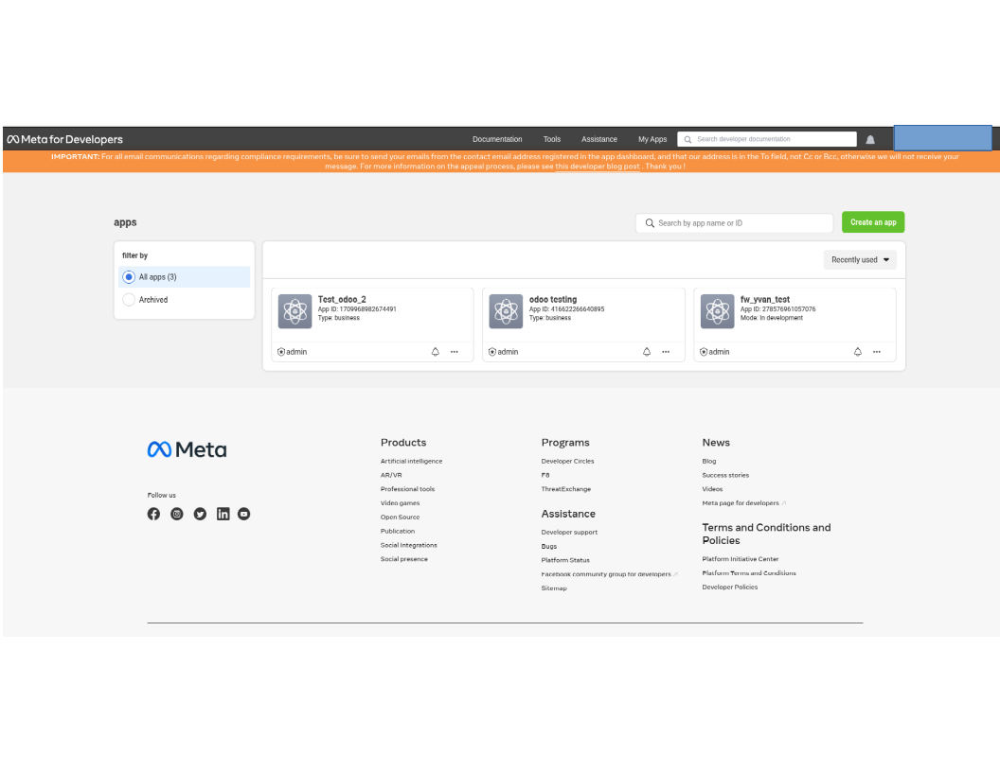
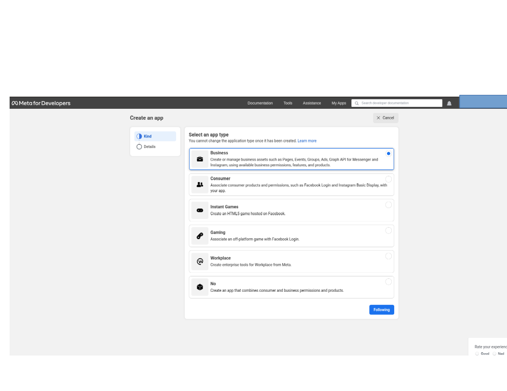
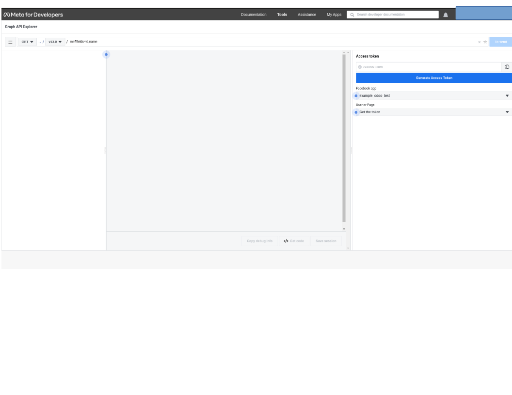
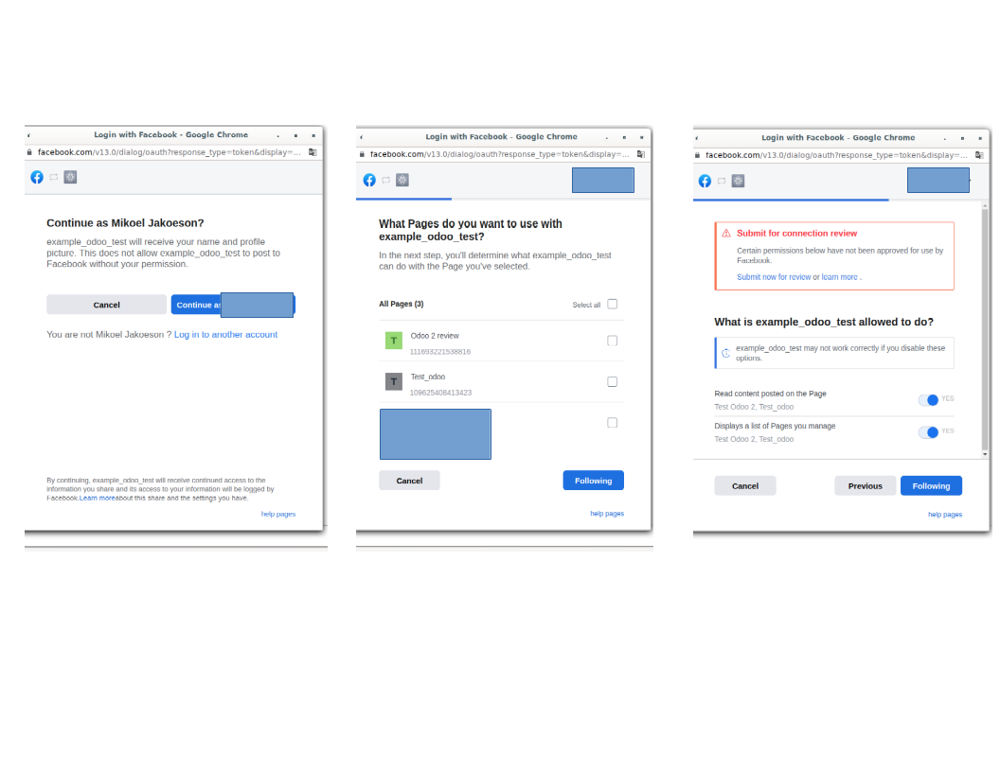
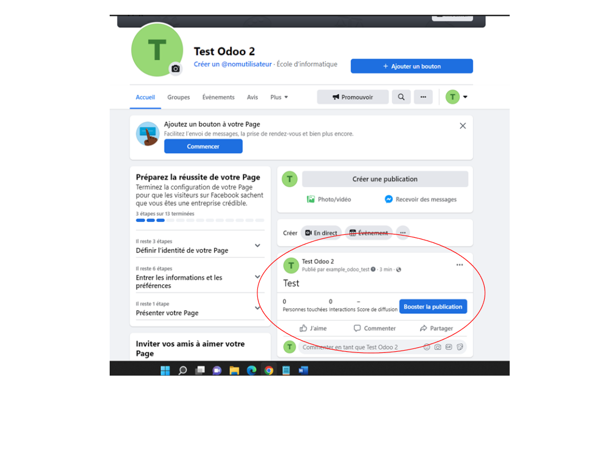
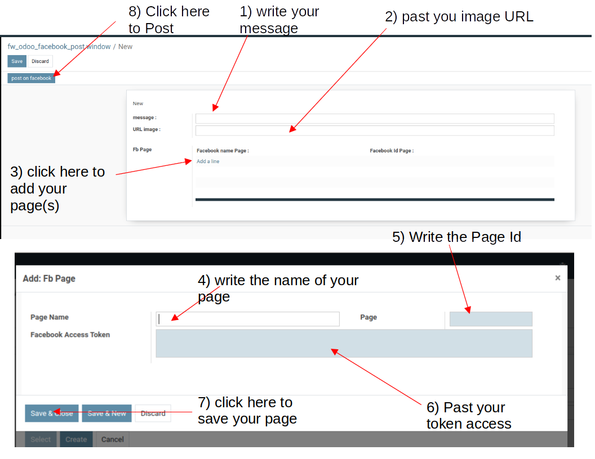

Before using this modules, you must be administrator in the page you want to post on facebook!
Then their are few step to use this module :
- First : create an apps on Facebook for developers
- Second : connect your apps to your account
- Third : try your apps
- Four : extend your acces token
- Five : Post on Facebook from odoo
First :
- Go create your apps
- Connect you on Facebook for developers by clicking on this link
- Login with your email address and password of your account
- You should arrive on a page like that (without apps for you if you never been here before)

- So click on create an app
- You should arrive on this page

- Choose business type
- It will ask a name for your app and your mail contact
- Usually it will ask your password account
- Then you have created your apps
Second :
- Now click on Tools in the top
- And click on Graph API Explorer
- You should get here

- Click on "Get the token" : choose "Obtain a Page acces token"
- Then it will open a new window for choosing your account
- Next it will ask which page you want to connect to the apps ( you must be administrator and you can choose several)
- Next you should arrive on another page without importance click on done

- Then you have associated your apps to facebook
Third :
- Now you have another category on the right side :
- You can see that their are automatically three permissions : public_profile, pages_show_list and pages_read_engagement
- Click on "add permission" : "choose pages_manage_posts"
- That's the only permissions we need (you can add others if you want)
- Go on facebook, on the page where you want post
- Click on "more" and choose "in regards to"
- Go to the bottom of the page
- You will see your ID PAGE, copy it
- Go back on Graph API Explorer
- Test if your apps works :
- Then click on "send"
- If you have the same message "id" : "......" means that your message has been send, else it will appear an error message
- Go on your Facebook Page
- So you see that your app is working

Four :
- The problem is that the Access token did not last long, so you must extend it
- Copy your Access token
- Now click on "Tools" in the top
- And click on "Access token debugger"
- Another time they will ask your password
- Then you have a new Access token with the expiry date
Five :
- It's almost over!
- Go on odoo
- Go on your "fw_odoo_facebook_post" module
- Click on create

- So you can post a message or an image or both
- For the moment you can only send message from internet (begin by "https")
- You must inform the ID Page and the Access_token (the Page name is optional)
- You can post on several Facebook pages
- Then after clicking on "post on facebook", you can see the post on all the pages you have chosen